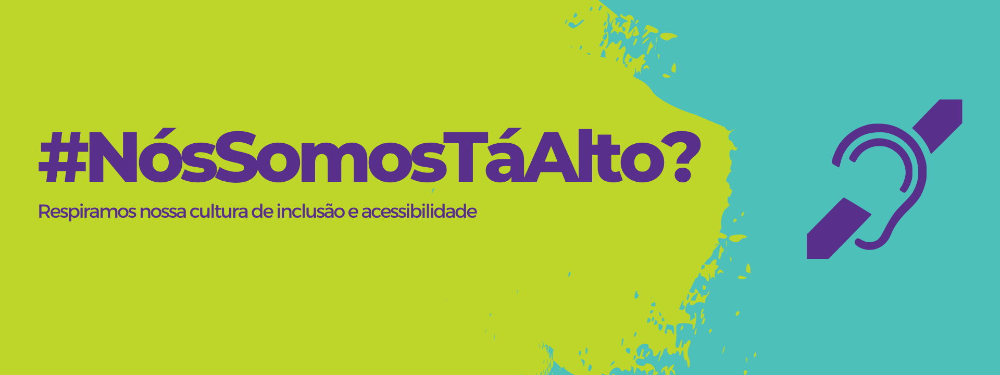

<div class="middle-content">
    <div class="container-page">
        <div class="about-us">
            <div class="about-us__banner">
                
            </div>
            <div class="about-us__text__center">
                <p class="about-us__text__center__p">Nosso propósito é transformar o dia a dia de pessoas com deficiência auditiva para uma melhor convivência e adaptação ao mundo dos ouvintes.</p>
            </div>
            <div class="about-us__text__bottom">
                <div class="about-us__text__bottom__left">
                    <p class="about-us__text__bottom__left__p">
                        O Tá Alto? surgiu em 2022, quando a fundadora do projeto Larissa Vieira desenvolveu uma proposta de sistema inovador e com alto potencial de crescimento dentro da realidade de pessoas não ouvintes - e também fora delas. Com valores profundamente enraizados,
                        criou-se um sistema baseado em princípios como <strong>respeito, comprometimento, confiança, igualdade, excelência, diversidade e inclusão </strong>, uma vez que entendemos que a maior fonte de riqueza de
                        conhecimento são as pessoas que colaboram com este sistema.
                    </p>
                </div>
                <div class="about-us__text__bottom__right">
                    <p class="about-us__text__bottom__right__p">
                        Somos guiados pelos nossos valores
                    </p>
                    <p class="about-us__text__bottom__right__p2">
                        Respeito Comprometimento Confiança Igualdade Excelência Diversidade Inclusão
                    </p>
                </div>
            </div>
        </div>
    </div>
</div>